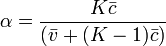
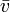
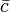

Cronbach's α (alpha) is a coefficient of reliability. It is commonly used as a measure of the internal consistency or reliability of a psychometric test score for a sample of examinees.In Gabmap, we use Cronbach's alpha in a different way. Normally, it is a measurement over data. But because our data is often not numeric, we have to process the data, to calculate the differences between locations, and then we apply Cronbach's alpha on those differences.Cronbach's α can be defined as

where K is the number of components (K-items or testlets),  the average variance, and  the average of all covariances between the components across the current sample of persons.
So, in Gabmap, Cronbach's alpha is not a coefficient of reliability of the data, but a coefficient of reliability of the difference measurements over that data. This depends both on the quality of the data itself, and on the quality of the method used for the measurement.
For consistency, we do this even when the input data is numeric, though this gives different results then if we would apply Cronbach's alpha to the data itself.